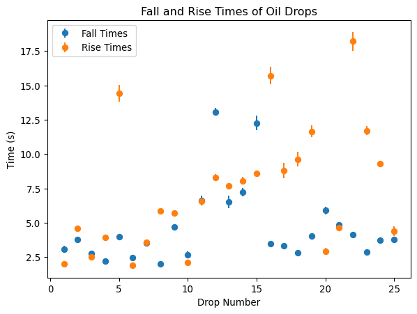
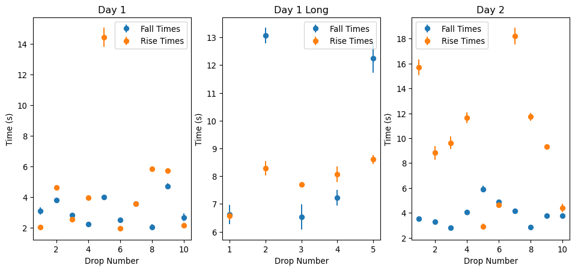
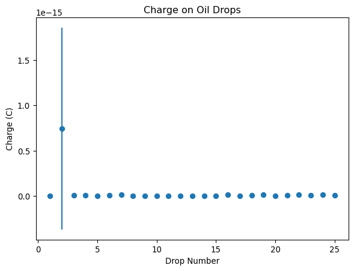
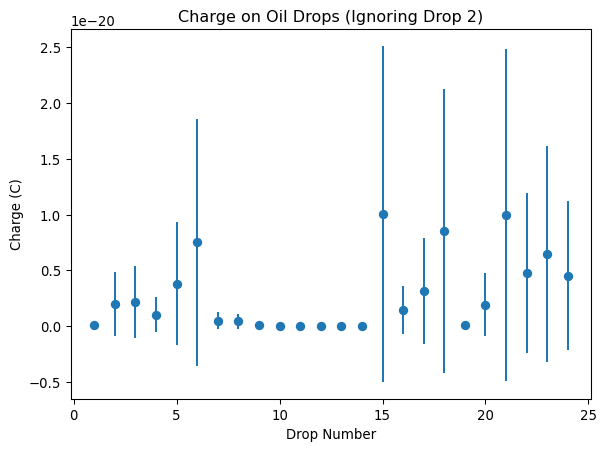

import numpy as np
import pandas as pd
import matplotlib.pyplot as plt
# rounding to 4th decimal place for easier reading
pd.options.display.float_format = '{:.4f}'.formatLab 06: Millikan Oil Drop Experiment
Import Libraries & Setup
Reflection
I had no lab partner for this lab, so I was getting accustomed to doing a lab on my own. As well it would have been beneficial to consider how best to gather data before starting the experiment, as I changed methods in order to collect a reasonable ammount of data.
Data Analysis
Start by importing our data
day1 = pd.read_csv('day1.csv')
day1_long = pd.read_csv('day1_long.csv')
# day2 data is already in fall/rise format so convert it
day2_fall = pd.read_csv('day2_fall.csv').to_numpy()[:,1:]
day2_rise = pd.read_csv('day2_rise.csv').to_numpy()[:,1:]day1 and day1_long contain timestamps for when the oil drop hits a reticle. We need to calculate the fall and rise times from these timestamps.
# convert dataframes to numpy arrays
day1 = day1.to_numpy()
day1_long = day1_long.to_numpy()
# replace the Drop # column with zeroes to indicate t0
day1[:,0] = 0
day1_long[:,0] = 0
# calculate fall & rise times
day1_times = day1[:, 1:] - day1[:,:-1]
day1_fall = day1_times[:, ::2]
day1_rise = day1_times[:, 1::2]
day1_long_times = day1_long[:, 1:] - day1_long[:,:-1]
day1_long_fall = day1_long_times[:, ::2]
day1_long_rise = day1_long_times[:, 1::2]Now we get the mean fall and rise times for each drop
def combine_times(fall, rise, day):
fall_means = np.mean(fall, axis=1)
fall_stds = np.std(fall, axis=1)
rise_means = np.mean(rise, axis=1)
rise_stds = np.std(rise, axis=1)
day_array = np.full(fall.shape[0], day)
return np.stack((fall_means, fall_stds, rise_means, rise_stds, day_array), axis=1)
day1_combined = combine_times(day1_fall, day1_rise, 1)
day1_long_combined = combine_times(day1_long_fall, day1_long_rise, 1)
day2_combined = combine_times(day2_fall, day2_rise, 2)
drops = np.concatenate((day1_combined, day1_long_combined, day2_combined), axis=0)Plot the fall and rise times of drops with error bars
X = np.arange(0, len(drops), 1) + 1
plt.figure
plt.errorbar(X, drops[:,0], yerr=drops[:,1], fmt='o', label='Fall Times')
plt.errorbar(X, drops[:,2], yerr=drops[:,3], fmt='o', label='Rise Times')
plt.xlabel('Drop Number')
plt.ylabel('Time (s)')
plt.title('Fall and Rise Times of Oil Drops')
plt.legend()
plt.show()
As well here are two graphs of all three datasets separately to see if there are any differences between them.
titles = ['Day 1', 'Day 1 Long', 'Day 2']
plt.figure(figsize=(12, 5))
for i, curr_drops in enumerate([day1_combined, day1_long_combined, day2_combined]):
plt.subplot(1, 3, i+1)
X = np.arange(0, len(curr_drops), 1) + 1
plt.errorbar(X, curr_drops[:,0], yerr=curr_drops[:,1], fmt='o', label='Fall Times')
plt.errorbar(X, curr_drops[:,2], yerr=curr_drops[:,3], fmt='o', label='Rise Times')
plt.xlabel('Drop Number')
plt.ylabel('Time (s)')
plt.title(titles[i])
plt.legend()
plt.show()
Calculating Charge
Now we can calculate the charge on each drop using the formula provided in the lab manual. We will need to define some constants first.
# Constants
g = 9.81 # m/s^2
b = 8.23e-3 # Pa.m (constant for air viscosity correction)
eta_1 = 18.52e-6 # N.s/m^2 (viscosity of air at day 1 temp)
eta_2 = 18.48e-6 # N.s/m^2 (viscosity of air at day 2 temp)
P_1 = 93.83 # kPa (pressure day 1)
P_2 = 93.26 # kPa (pressure day 2)
P_err = 0.01 # kPa (error in pressure measurements)
dist_1 = (18.14-6.20-6.12)*10e-3 # m (distance between plates measured day 1)
dist_2 = (18.16-6.05-6.12)*10e-3 # m (distance between plates measured day 2)
raw_dist_err = np.sqrt((0.01e-3)**2 * 3) # m (error in the distance measurements)
dist = (dist_1 + dist_2) / 2 # Weighted average of distances
dist_err = raw_dist_err / np.sqrt(2) # Weighted error of distances
d = 0.5e-3 # m (distance between reticles)
V = 400 # V (voltage across plates)
rho_oil = 890 # kg/m^3 (density of oil)Now we can calculate the charge on each drop
fall_time = drops[:,1]
fall_err = drops[:,1]
rise_time = drops[:,2]
rise_err = drops[:,3]
day = drops[:,4]
eta = np.where(day == 1, eta_1, eta_2)
P = np.where(day == 1, P_1, P_2)
dist_used = np.where(day == 1, dist_1, dist_2)
v_fall = d/fall_time
v_fall_err = d/(fall_time**2) * fall_err
v_rise = d/rise_time
v_rise_err = d/(rise_time**2) * fall_err
r = -b/(2*P) + np.sqrt((b**2)/(4*P**2) + (9 * eta * v_fall)/(2 * rho_oil * g))
r_err = np.sqrt(
(P_err*(9*eta)/(8*rho_oil*g*(r+b/(2*P))))**2 +
(v_fall_err * (b/(2*P**2) - (b**2)/(4*(P**3)*(r+b/(2*P)))))**2
)
E = V / dist
q = ((v_fall + v_rise)*4*np.pi*rho_oil*g*r**3)/(3*E)
q_err = q * np.sqrt(
(v_rise_err/(v_fall+v_rise))**2 +
(1/(2*v_fall) + 1/(v_fall + v_rise))**2 * v_fall_err**2
)
pd.DataFrame({"charge": q, "error": q_err})| charge | error | |
|---|---|---|
| 0 | 0.0000 | 0.0000 |
| 1 | 0.0000 | 0.0000 |
| 2 | 0.0000 | 0.0000 |
| 3 | 0.0000 | 0.0000 |
| 4 | 0.0000 | 0.0000 |
| 5 | 0.0000 | 0.0000 |
| 6 | 0.0000 | 0.0000 |
| 7 | 0.0000 | 0.0000 |
| 8 | 0.0000 | 0.0000 |
| 9 | 0.0000 | 0.0000 |
| 10 | 0.0000 | 0.0000 |
| 11 | 0.0000 | 0.0000 |
| 12 | 0.0000 | 0.0000 |
| 13 | 0.0000 | 0.0000 |
| 14 | 0.0000 | 0.0000 |
| 15 | 0.0000 | 0.0000 |
| 16 | 0.0000 | 0.0000 |
| 17 | 0.0000 | 0.0000 |
| 18 | 0.0000 | 0.0000 |
| 19 | 0.0000 | 0.0000 |
| 20 | 0.0000 | 0.0000 |
| 21 | 0.0000 | 0.0000 |
| 22 | 0.0000 | 0.0000 |
| 23 | 0.0000 | 0.0000 |
| 24 | 0.0000 | 0.0000 |
Now we can plot q
plt.figure()
X = np.arange(0, len(q), 1) + 1
plt.errorbar(X, q, yerr=q_err, fmt='o')
plt.xlabel('Drop Number')
plt.ylabel('Charge (C)')
plt.title('Charge on Oil Drops')
plt.show()
For some reason, we had a really large uncertainty on the 2nd drop, which means that it is hard to see the quantization of charge in this plot. However, if we ignore that point can see the quantization more clearly. Note we only ignore this point for visualization, not for any calculations.
plt.figure()
Q = q[~(X==2)]
Q_err = q_err[~(X==2)]
X = np.arange(0, len(Q), 1) + 1
plt.errorbar(X, Q, yerr=Q_err, fmt='o')
plt.xlabel('Drop Number')
plt.ylabel('Charge (C)')
plt.title('Charge on Oil Drops (Ignoring Drop 2)')
plt.show()
from this it is easier to see a noticable pattern in the charges, which suggests that charge is quantized, despite the large uncertainties in some of the measurements. It seems that the more charged our oil drops are the larger the uncertainty in our measurements. This suggests that our error is systematic, likely due to some unaccounted for factor in our experiment, such as collisions with air molecules.
Let us divide by the smallest charge to see if we can find integer multiples
min_charge = np.min(q)
min_charge_err = q_err[np.argmin(q)]
ratios = q / min_charge
ratios_err = ratios * np.sqrt((q_err/q)**2 + (min_charge_err/min_charge)**2)
print(f"min_charge: {min_charge:.4e} ± {min_charge_err:.4e}")
pd.DataFrame({ "ratios": ratios, "err": ratios_err}) min_charge: 5.5501e-24 ± 7.9995e-24| ratios | err | |
|---|---|---|
| 0 | 25.9869 | 52.1015 |
| 1 | 849360.0701 | 1764626.4440 |
| 2 | 358.5164 | 734.0145 |
| 3 | 396.6770 | 816.8321 |
| 4 | 187.3045 | 388.3179 |
| 5 | 687.0768 | 1404.1769 |
| 6 | 1352.8956 | 2791.1610 |
| 7 | 92.5890 | 190.7172 |
| 8 | 80.6382 | 166.0034 |
| 9 | 20.6987 | 41.4934 |
| 10 | 6.0848 | 12.4436 |
| 11 | 12.7678 | 26.2591 |
| 12 | 1.9848 | 4.0503 |
| 13 | 12.3781 | 25.4478 |
| 14 | 1.0000 | 2.0383 |
| 15 | 1813.4288 | 3765.7410 |
| 16 | 260.5353 | 539.2404 |
| 17 | 573.0393 | 1187.5206 |
| 18 | 1537.1146 | 3189.6886 |
| 19 | 16.4364 | 33.2133 |
| 20 | 345.5885 | 712.5265 |
| 21 | 1793.8440 | 3725.9547 |
| 22 | 866.1322 | 1796.6662 |
| 23 | 1167.4052 | 2420.4848 |
| 24 | 814.0053 | 1680.4823 |
We do not have very good data, so it is hard to see integer multiples in these ratios, no matter if we divide by an integer or not. Our minimum charge is seen above and definetly does not agree with our expected value of the elementary charge of approximately \(1.6 \times 10^{-19} \text{ C}\). This is likely due to more systematic error in our measurements, most likely imprecise timing this time, as well as not having enough data to average out random errors.
Now we can try to estimate the elementary charge by dividing our charges by our ratios, rounded to the nearest integer, then we can look at the weigheted average of these estimates to get a better estimate of the elementary charge.
int_ratios = np.round(ratios)
e_estimates = q / int_ratios
e_estimates_err = e_estimates * np.sqrt((q_err/q)**2 + (ratios_err/ratios)**2)
weights = 1 / (e_estimates_err**2)
e_weighted_avg = np.sum(e_estimates * weights) / np.sum(weights)
e_weighted_err = np.sqrt(1 / np.sum(weights))
print(f"Estimated elementary charge: {e_weighted_avg:.4e} ± {e_weighted_err:.4e} C")Estimated elementary charge: 5.5537e-24 ± 2.8038e-24 CSadly this doesn’t yield much hope for us to get a good estimate of the elementary charge, as our value is still far from the expected value. Hopefully in the future we can improve our experimental methods to reduce systematic error and get better results.